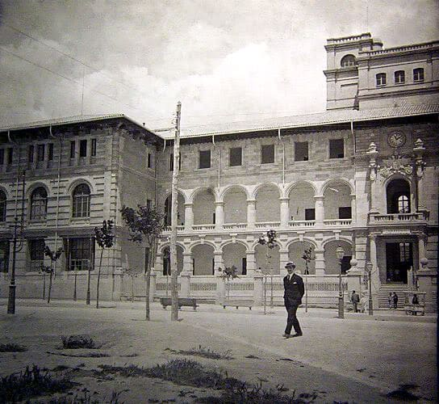
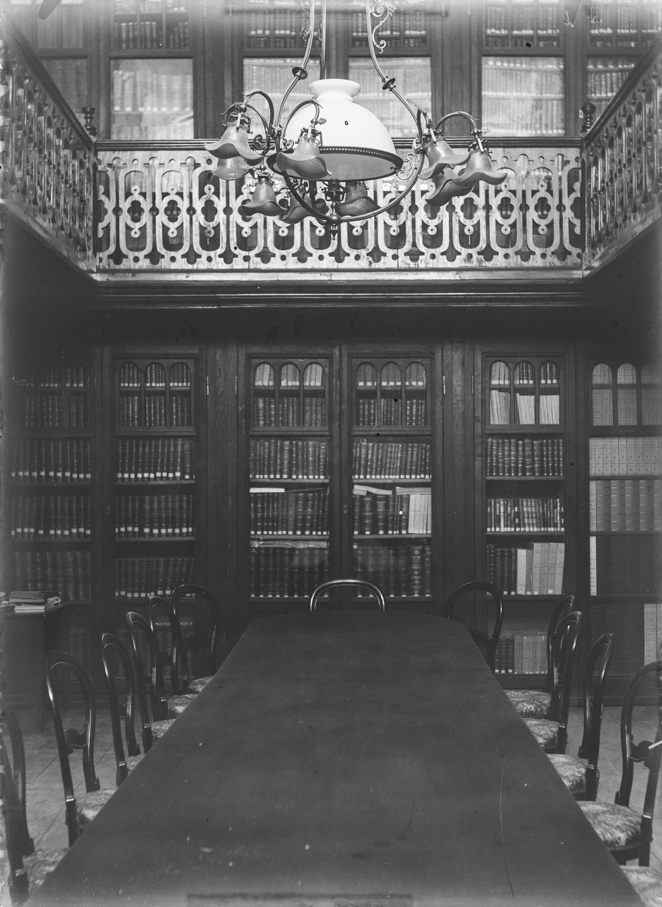
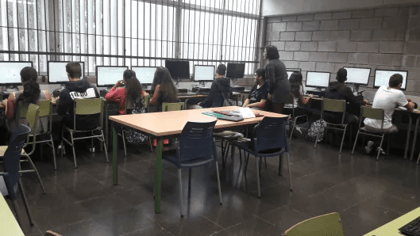
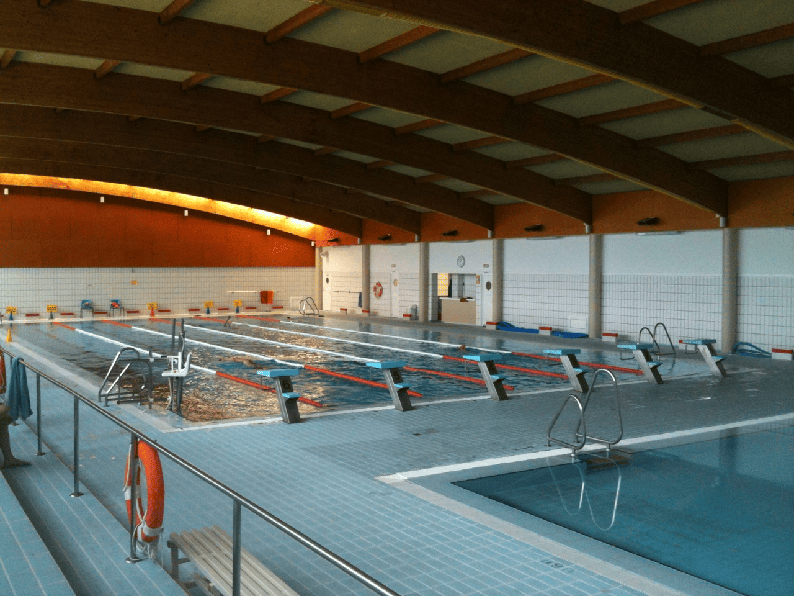
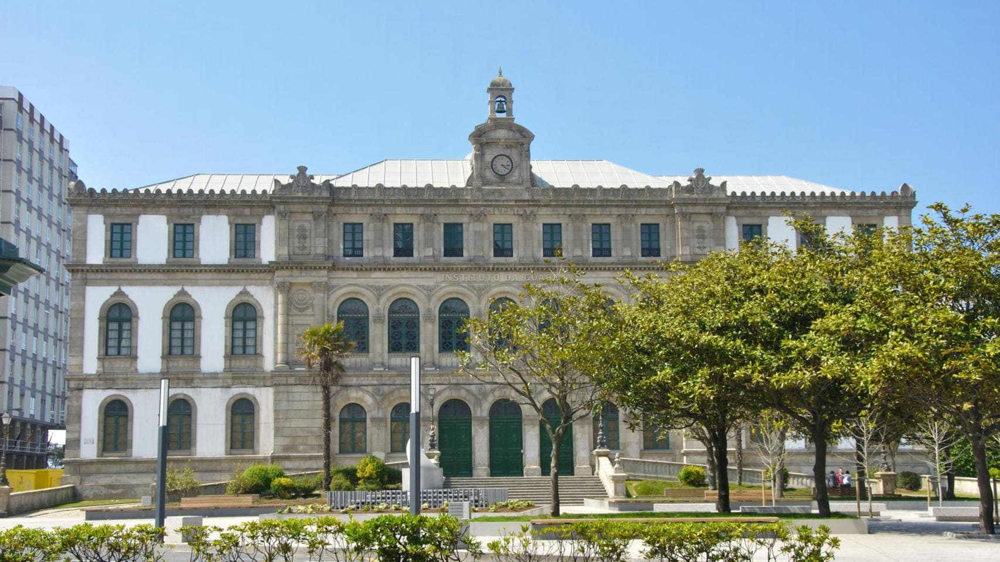
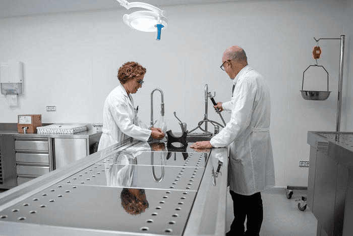

De la Tradición a la Innovación Educativa
Desde su fundación en 1970, el Instituto arkas ha evolucionado manteniendo su compromiso con la excelencia educativa, adaptándose a los tiempos sin perder sus valores fundamentales.

Fundación del Instituto
Nace el Instituto arkas con 5 aulas y 150 estudiantes, iniciando una trayectoria de excelencia educativa.
Primer edificio en C/ Educación, 15

Primera Gran Ampliación
Construcción del primer laboratorio de ciencias y biblioteca, ampliando las instalaciones para 400 estudiantes.
Primer laboratorio de ciencias equipado

Llegada de la Informática
Implementación del primer aula de informática con 15 ordenadores, marcando el inicio de la digitalización.
Equipos con Windows 3.1 y procesadores 486

Ampliación Deportiva
Construcción del pabellón polideportivo y piscina climatizada para el desarrollo integral del alumnado.
Piscina semiolímpica de 25 metros
Reconocimiento Nacional
Galardonado como "Centro Educativo Innovador" por su implementación de metodologías pedagógicas avanzadas.
Premio a la Innovación Educativa del Ministerio

Digitalización Completa
Implementación del Aula Virtual y transformación digital de todos los procesos educativos.
Plataforma propia con más de 500 cursos online

Centro de Referencia
Más de 1,200 estudiantes y 85 profesores especializados consolidan nuestro liderazgo educativo.
98% de éxito en pruebas de acceso a la universidad